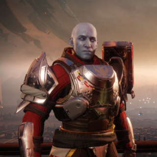

Destiny 2 Location Information
The Tower is a social space located atop the defensive wall encircling the Last City. It serves as the
headquarters of the Vanguard and the home of the Guardians.
Following the defeat of Dominus Ghaul
and his Red Legion, the Vanguard opened facilities on wall's ramparts while the original Tower, which
was destroyed at the onset of the Red War, was being rebuilt. The new Tower provides a dramatic view of
the reawakened Traveler.
| Character | Location | Description |
|---|---|---|
Banshee-44 |
Courtyard | Banshee-44 is an Exo Gunsmith, located within the Tower on the far right side of the Vault and the far left of the Cryptarch. He sells weapons for field testing, telemetries that increase upgrade weapons for a certain type of weapon, and ammo synthesis items for Guardians. He can also sell legendary weapons that arrive on Armsday, if the player has earned enough reputation by testing weapons for him. |
| Commander Zavala | Courtyard | Commander Zavala is an Awoken Guardian who serves as the Vanguard of the Titan class, and overall Vanguard Commander of The Last City. Stern and uncompromising, Zavala's only goal is to safeguard humanity within the Last City against all threats. He oversees all Guardian military operations, and led the Guardians to victory in both the Taken War and Red War. In the aftermath of both conflicts, Zavala has become increasingly isolated and reluctant to commit Guardians to conflicts outside of the Last City. |